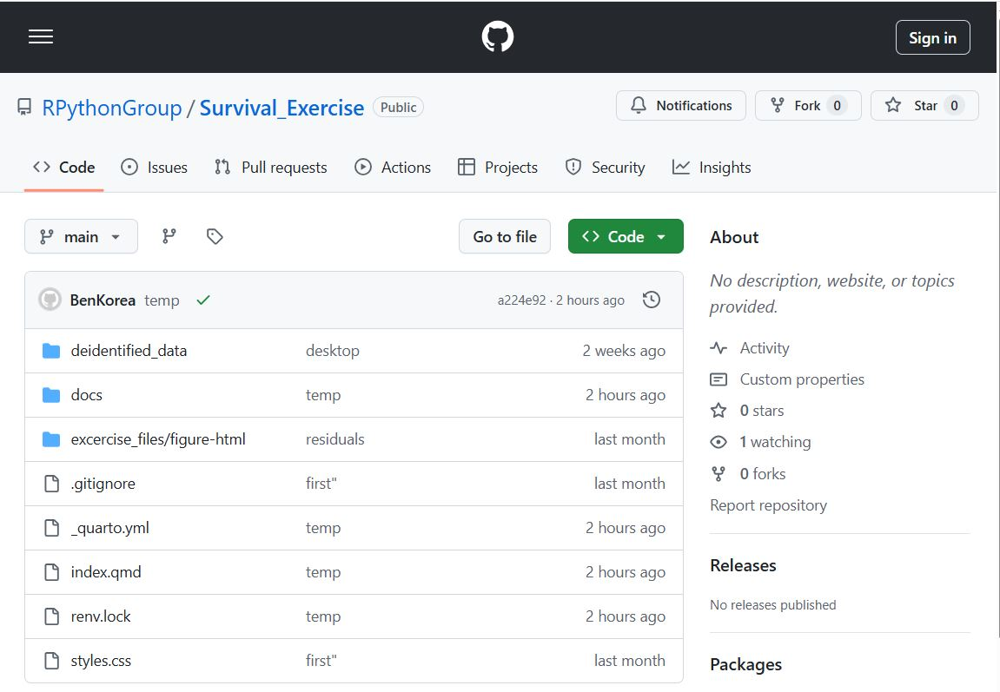
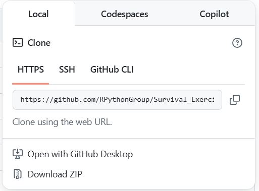

RStdio Terminal tab
git --versionBenKorea feat. ChatGPT
2023년 3월 29일
2025년 9월 3일


r443-survival_exerciseRStudio>File 메뉴에서 New Project를 선택Existing Directory를 선택Create Project 버튼클릭만약에 설치되어 있지 않다는 오류가 나온다면 아래의 명령으로 설치하시면 됩니다.